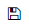
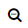
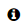
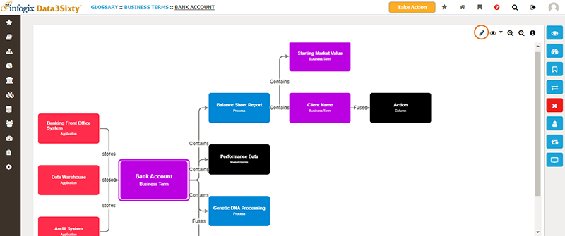

|
|
Inspecting lineage
Data lineage enables you to track the lifecycle of an artifact and provides an overview of the relationship between various objects stored in the system.
When you are viewing an artifact such as a Business Term or a Report, you can view the lineage of that item by clicking the Lineage button on the right side of the screen:

Clicking the lineage button displays a flow diagram illustrating the journey of the selected item, from the time the artifact originated through to the systems that store it, showing how the data is transformed and where it is used in business processes:

At any point through the flow, you can double-click an item to focus the diagram on the selected step.
Select an item to gain an insight into definitions, ownership and technical details:

The following functions are available from the lineage screen:
| Button | Description |
|---|---|
| Edit Lineage - Modify the lineage of the selected artifact. | |
|
 |
Save Lineage - Save your edits to the lineage map. |
|
Toggle Predicate Names - Turn on or off the display of the predicate names on the connection lines. |
|
| Zoom in - Zoom in to view a specific area of the lineage map. | |
|
 |
Zoom out - Zoom out to see a wider area of the lineage map. |
|
 |
Show/Hide Info - View definitions, ownership and technical details for the selected item. |
| Cancel Changes - Exit from the editing screen without saving your changes. |
Building lineage
Lineage can be built between any artifacts that are defined in the glossary by establishing relationships between them, see Defining relationships between assets.
For example, one of your critical Business Terms may be used in some important compliance reports. To ensure data lineage is created for the Business Term, you must create a relationship between the data and the report.
The first step in creating relationships is to create a predicate. Predicates define how two objects relate to each other.
Once you have defined a predicate and a relationship to link the items, data lineage is automatically created between the objects.
Note: To define relationships between items in the system, the required relationship and predicate types must already have been created by an administrator, see Establishing relationships and Establishing predicates.
Editing lineage
- Select an artifact and navigate to the Lineage screen.
- Click the Edit Lineage button:

The Edit Lineage page can be used to fine tune your lineage map.
- When you have finished fine tuning, click the Save Lineage button to save your changes, or click the Cancel Changes button to exit out of the editing page without saving your edits.